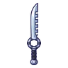
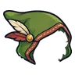

ลูกมังกรไพร
มอนธาตุดิน Lv 88–96
เจอที่
| แมพ | โซน | Lv | ภูมิภาค |
|---|---|---|---|
| ทะเลสาบไข่มังกร | 88–94 | ที่ราบสูง | |
| ทะเลสาบไข่มังกร | ฝั่งรังมังกร | 94–96 | ที่ราบสูง |
| หาดซากแอมโมไนต์ | 88–94 | ที่ราบสูง | |
| หาดซากแอมโมไนต์ | เปลือกหอยยักษ์ | 94–96 | ที่ราบสูง |
| ผารังเทอโรซอร์ | 88–94 | ที่ราบสูง | |
| ผารังเทอโรซอร์ | เสาหินรังยักษ์ | 94–96 | ที่ราบสูง |
| ป่ายางอำพัน | 88–94 | ที่ราบสูง | |
| ป่ายางอำพัน | ต้นอำพันยักษ์ | 94–96 | ที่ราบสูง |
ค่าสถานะตามเลเวล
| Lv | HP | ATK | DEF | MDEF | EXP | Job |
|---|---|---|---|---|---|---|
| 88 | 49,445 | 178–267 | 25 | 21 | 107 | 80 |
| 92 | 56,069 | 190–284 | 26 | 22 | 112 | 84 |
| 96 | 62,760 | 204–306 | 27 | 23 | 117 | 88 |
ตีด้วยธาตุไหนดี
แรงขึ้น: ไฟ ×1.5 พิษ ×1.25
เบาลง: ลม ×0.5 ดิน ×0.25
วัตถุดิบที่ดรอป
| ของ | โอกาส | |
|---|---|---|
| เปลือกไข่มังกรไพร | 55% | 1 ชิ้น (15% ได้ 2) |
อุปกรณ์ที่ดรอป (11)
| ของ | โอกาส |
|---|---|
| 0.25% | |
| ชุดแมงมุมไหม (เสื้อ) | 0.15% |
| ชุดแมงมุมไหม (กางเกง + รองเท้า) | 0.15% |
| ชุดเงาหมอก (เสื้อ) | 0.15% |
| ชุดเงาหมอก (กางเกง + รองเท้า) | 0.15% |
| 0.12% | |
 ดาบคู่ซี่หวีหักดาบ | 0.12% |
 ฮู้ดหนังพรานขนนก | 0.08% |
| 0.06% | |
| ชุดแมงมุมไหม (เข็มกลัดใยแมงมุม) | 0.05% |
| ชุดเงาหมอก (แหวนหมอกม่วง) | 0.05% |
สกิล
ยิงกระจาย (Lv 25+) · ยิงกระจาย (Lv 60+) · ปาตกใส่ (Lv 60+)